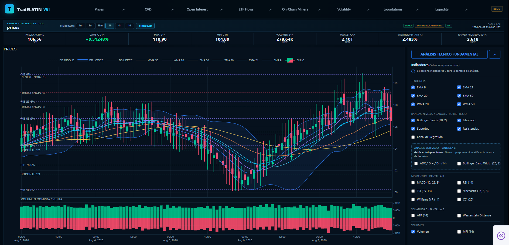
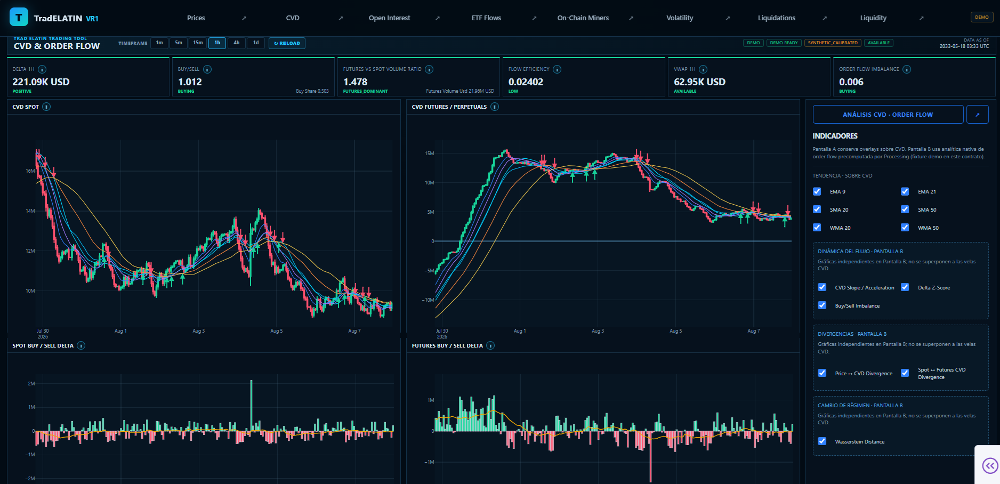

C9 · PLANIFICADO / EN DESARROLLO
C9 · PLANIFICADO / EN DESARROLLOC9 — Redes financieras blockchain
Un marco independiente de la red para observar actividad financiera nativa de blockchain.
La evidencia HMI aún no está disponible.Explorar blockchain →VR1 transforma datos financieros heterogéneos en observaciones estructuradas, sincronizadas y reproducibles. No predice precios, no genera señales de trading y no ejecuta operaciones.

C1–C8 son pipelines de observación implementados, validados principalmente con emulador, datos sintéticos y replay. Las rutas de adquisición en vivo dependen de credenciales externas de proveedores y del acceso a datos correspondiente. C9 es una arquitectura común independiente de la red, planificada y en desarrollo.

C1 · IMPLEMENTADOPreciosVer evidencia HMI →
C2 · IMPLEMENTADOCVD y flujo de órdenesVer evidencia HMI → C3 · IMPLEMENTADOOpen Interest y FundingVer evidencia HMI →
C3 · IMPLEMENTADOOpen Interest y FundingVer evidencia HMI →
 C4 · IMPLEMENTADOETF y flujos de exchangesVer evidencia HMI →
C4 · IMPLEMENTADOETF y flujos de exchangesVer evidencia HMI →
 C5 · IMPLEMENTADOOn-Chain y minerosVer evidencia HMI →
C5 · IMPLEMENTADOOn-Chain y minerosVer evidencia HMI →
 C6 · IMPLEMENTADOVolatilidad y regímenes de mercadoVer evidencia HMI →
C6 · IMPLEMENTADOVolatilidad y regímenes de mercadoVer evidencia HMI →
 C7 · IMPLEMENTADOLiquidaciones y posicionamientoVer evidencia HMI →
C7 · IMPLEMENTADOLiquidaciones y posicionamientoVer evidencia HMI →
 C8 · IMPLEMENTADOMicroestructura de liquidezVer evidencia HMI →
C9 · PLANIFICADO / EN DESARROLLO
C8 · IMPLEMENTADOMicroestructura de liquidezVer evidencia HMI →
C9 · PLANIFICADO / EN DESARROLLOUn marco independiente de la red para observar actividad financiera nativa de blockchain.
La evidencia HMI aún no está disponible.Explorar blockchain →